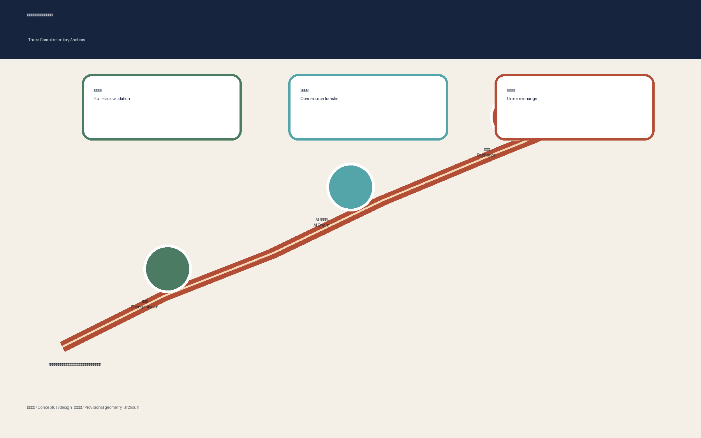
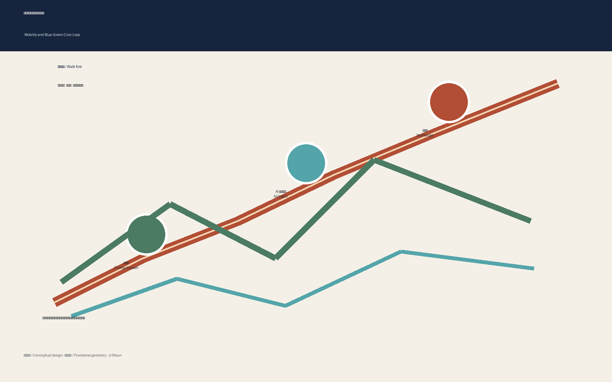

11,412,825 m²
一条遗产公共脊连接三个互补创新锚点；所有 AI 服务均可解释、有人审并保留非数字替代。

12.3%
7.3%
三区互补

慢行与蓝绿网络

临时边界和几何推导值，仅供概念设计与自检；不是官方红线或规划统计。
一条遗产公共脊连接三个互补创新锚点；所有 AI 服务均可解释、有人审并保留非数字替代。
11,412,825 m²
12.3%
7.3%


临时边界和几何推导值，仅供概念设计与自检；不是官方红线或规划统计。